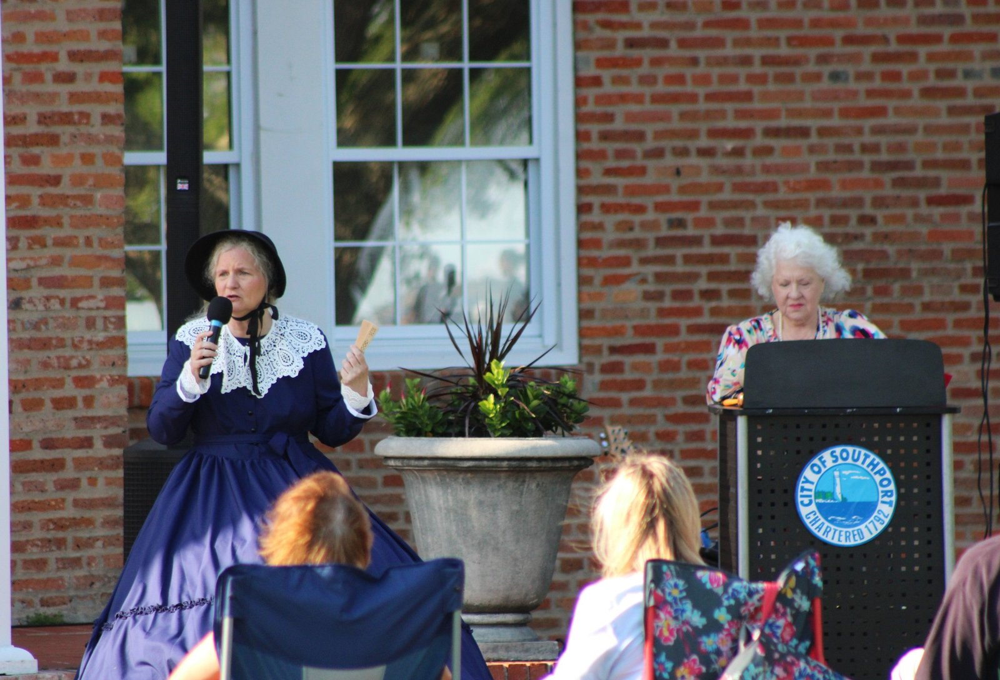
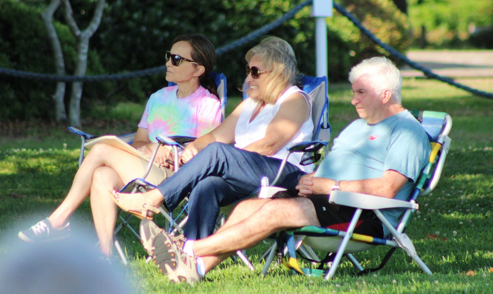

Join the Southport Historical Society
Would you like to become a member of the society?
Becoming a member of the society gives you the benefit of partnering with an organization that contributes to the past and present history of the community. As we have developed our influence over the past forty plus years it has been with the dedication of folks like you that have given us new ideas, programs, technology, and volunteers to carry out our objectives.
Most people would also say there’s a definite benefit at the potluck dinner table at our general membership meetings five times a year. Your membership enables us to fund an annual scholarship for a graduating high school senior along with other donations and contributions to worthy projects. A look through this website will show you the big picture of our outreach.
SHS membership is an avenue of learning and service and we invite you to become a part of the ongoing efforts to enrich the consciousness of the public with an appreciation of local history.


Check out our membership options:
Annual Individual Membership = $25.00
Lifetime Individual Membership = $200.00
Annual Family Membership = $40.00
Lifetime Business or Family Membership = $300.00
Did you know that you can purchase your membership online?
Click here to purchase your membership in the SHS store!
Or, if you prefer, you may print and mail the membership application below with a check to:
The Southport Historical Society
Post Office Box 10014
Southport, NC 28461
Click here to download: SHS Membership Application
Join us at a General Meeting!
Meetings are held on the fourth Thursday night of January, March, May, and September and on the first Thursday night of November. The meetings include an interesting history-related program, and we invite everyone to join us – members and non-members alike.